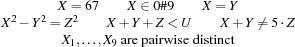
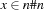
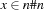
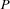

2.1 Finite Domains and Constraints
A finite domain is a finite set of nonnegative integers. The notation stands for the finite domain  .
.
A constraint is a formula of predicate logic. Here are typical examples of constraints occurring with finite domain problems:

domain constraints
A domain constraint takes the form  , where
, where  is a finite domain. Domain constraints can express constraints of the form since is equivalent to .
is a finite domain. Domain constraints can express constraints of the form since is equivalent to .
basic constraints
A basic constraint takes one of the following forms: ,  , or , where is a finite domain.
, or , where is a finite domain.
finite domain problems
A finite domain problem is a finite set  of quantifier-free constraints such that contains a domain constraint for every variable occurring in a constraint of . A variable assignment is a function mapping variables to integers.
solutions
A solution of a finite domain problem is a variable assignment that satisfies every constraint in .
Notice that a finite domain problem has at most finitely many solutions, provided we consider only variables that occur in the problem (since the problem contains a finite domain constraint for every variable occurring in it).